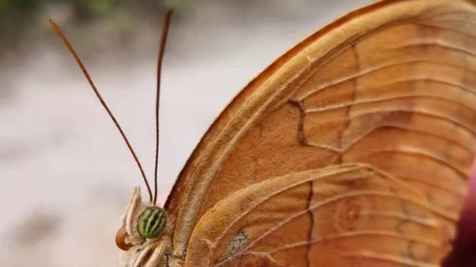

感谢那只箭环蝶————江鸟

我相信那只箭环蝶是命运对我的恩赐。在它出现之前，我会觉得生活中很多的事情是“不可能完成的使命”，比如，4分钟内跑完1000米。每次在跑步练习时，我总是因为体力不支而放弃了拼搏的念头，成绩当然不尽人意，最后慢慢地变得逃避起来，认为万事万物冥冥自有天意，个人的努力并不会创造奇迹，直到我遇见了它。
那一次，我参加的博物俱乐部赴秦岭进行学年考察。在考察的第三天，开始下起大雨，使保护区内本来曲折不平的山路变得更加潮湿泥泞，环境变得极端恶劣。我们小分队在风雨交加中快速行走。山路越来越陡，越来越滑，我不知道为什么下这么大的雨还要出来考察，动物在这样恶劣的环境下早就躲起来了吧，我还能看到什么？继续前行还有什么意义？只会让我们从上到下白白湿透而已。
突然，在路边的泥坑旁，我看到了一只前胸背板有明显损坏的蝴蝶。它正“躺”在路边，双翅已被坠落的树枝打坏，硕大的雨滴不间断地敲打着它那瘦小柔弱的身躯。我心中一惊，可怜的小东西，估计命不久矣。然而，它在恶劣的环境中依然不断地挣扎着，纤细的翅膀在努力地扇动，瘦小的身子不停地晃动，并一点点地用自己“强大”的力量挣脱开树枝，竟又飞起来了！看到这，我的内心被深深地触动了。树枝重压下的弱小的蝴蝶，能够在风雨交加中依然挺立着，在挫折中顽强抵抗着，它面对困难没有绝望，更没有放弃，最终挣脱开树枝，飞回大自然的怀抱。生命中竟然可以蕴藏如此执着的信念，如此强大的力量！我感慨不已，忽然间，所有的疲惫都消失殆尽，继续坚定地在大雨中向前走去。
从那以后，这只蝴蝶会时常出现在我眼前。在学校1000米的体育测试中，我以3分58秒的成绩打破个人记录。那一刻，我觉得，一切的努力都是值得的，坚定的信念和顽强的意志会让生命绽放出无法想象的光彩！
我要感谢那只蝴蝶，它使我懂得，每个人的心里都藏着一个了不起的自己，只要你不消极，不放弃，坚守初心，不懈努力，就没有达不到的远方。